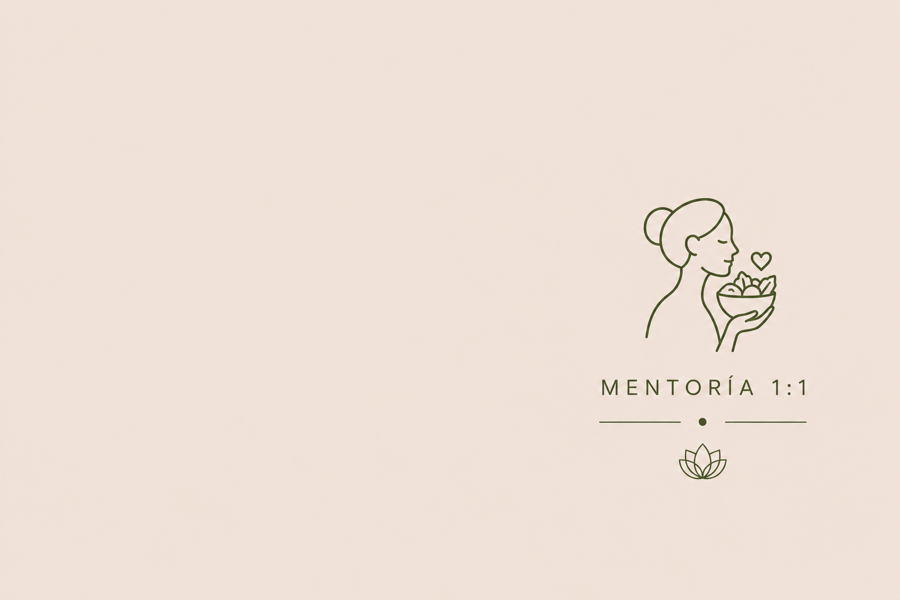

Mentoría individual
Vínculo Alimentario
Acompañamiento médico integral de 3 meses
Recuperá la paz con la comida.
En esta mentoría trabajaremos para que recuperes la tranquilidad al comer, dejes de depender de reglas externas y vuelvas a confiar en tu cuerpo.
Porque cuando entendés cómo funciona, dejás de temer. Y esa información te da paz.
Aplicar a la Mentoría
¿Te suena familiar?
Lo que muchas mujeres sienten antes de llegar acá
No estás sola. Y no es tu culpa.
Terminé el día pensando en todo lo que comí y lo que no debería haber comido. Es agotador vivir así.
Hay momentos en los que disfruto de comer y después llega la culpa. No sé cómo salir de ese ciclo.
Siento que no confío en mi cuerpo. Que si me dejo llevar, todo se va a descontrolar.
Ya probé muchas cosas. Dietas, planes, apps. Pero ninguna me ayudó a sentirme en paz con la comida.
El proceso
Cómo es trabajar juntas
Sin planes restrictivos. Sin alimentos prohibidos.
Aplicás
Completás un formulario breve y sin presión. Contás tu historia a tu ritmo, solo lo que querés compartir.
Primera llamada
Nos encontramos en un espacio de escucha real. Sin juicio, sin diagnósticos apresurados. Solo entender dónde estás y hacia dónde querés ir.
Tu camino personalizado
Diseñamos juntas un plan flexible, adaptado a tu historia y tu vida. Nada rígido, nada prohibido, nada que ya hayas intentado sin resultado.
Acompañamiento continuo
Encuentros virtuales 1:1 cada 14 días el primer mes, luego cada 30 días. Además, seguimiento vía WhatsApp cuando lo necesites. No estás sola en este proceso.
Antes de aplicar
¿Esta mentoría es para vos?
Es para vos si…
- La relación con la comida ocupa demasiado espacio en tu cabeza y en tu día.
- Hay momentos en los que comer se siente fuera de control y no sabés cómo manejarlo.
- Querés aprender a comer sin reglas rígidas ni alimentos prohibidos.
- Te sentís lista para trabajar en esto con acompañamiento profesional.
- Pasaste por un tratamiento por TCA y hoy querés construir un vínculo más amable con la alimentación.
- Estás dispuesta a trabajar en esto también con psicoterapia en paralelo.
No es para vos si…
- Buscás un plan de alimentación que te ayude a perder peso rápidamente.
- No estás en un momento de vida donde puedas comprometerte con un proceso.
- Pretendés que esta mentoría te convierta en una versión más pequeña de vos misma.
- No estás abierta a trabajar este proceso también con un profesional de salud mental.
- Querés resultados inmediatos sin atravesar un proceso real.
El primer paso
Recuperar la paz con la comida es posible. Y no tenés que hacerlo sola.
Aplicar es el primer paso. Completá el formulario, tengamos una llamada para conocernos y ver si este espacio es lo que necesitás en este momento.